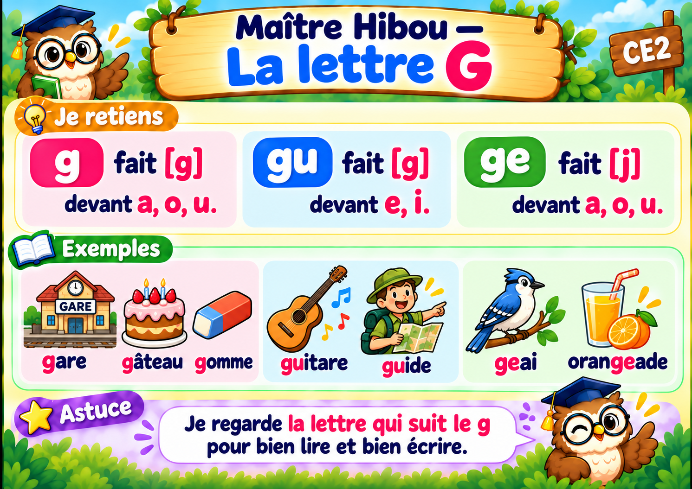

À toi de jouer !
10 exercices interactifs. Vérifie ta réponse avant de passer à la suivante.
Je regarde la lettre qui vient après g pour choisir g, ge ou gu.

10 exercices interactifs. Vérifie ta réponse avant de passer à la suivante.